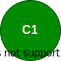
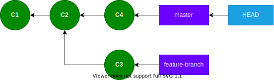

Git Internals
Part 2: Branches and HEAD
Part 1: Commit, trees, and blobs... oh my! 😲
Overview
- Branches
- HEAD
- Picture walkthrough
- Command line demo!
Commit

on master branch
What is a branch?
🤔
Commit on master branch
Branches are pointers to commits.
What is HEAD?
🤔
HEAD
HEAD is a pointer to whatever we have checked out.
What is HEAD (continued)?
$ cat .git/HEAD
ref: refs/heads/master
What is HEAD (continued)?
$ cat .git/refs/heads/master
7434d3f407245cd86a9fac77c9cc097d78a392bf
Steps
- Commit on default
masterbranch (C1) - Commit on
masterbranch again (C2) - Create and checkout a
feature-branch - Commit on
feature-branch(C3) git checkout master- Commit on
masterbranch again (C4)
(1) Commit 1
(2) Commit 2 ➜
(2) Commit 2
(3) git checkout -b feature-branch ➜
(3) git checkout -b feature-branch
(4) Commit 3 ➜
(4) Commit 3

(5) git checkout master ➜
(5) git checkout master

(6) Commit 4 ➜
(6) Commit 4
